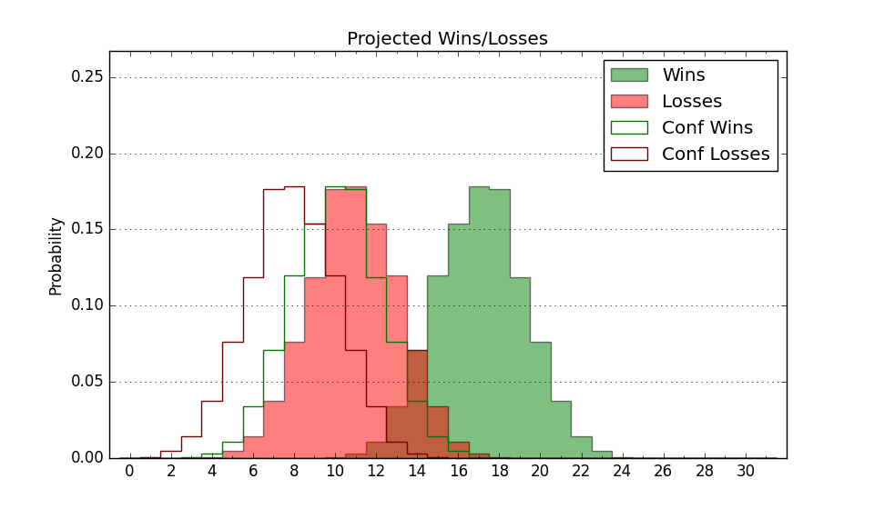

| Home | Game Probabilities | Conferences | Preseason Predictions | Odds Charts | NCAA Tournament |
| City: | El Paso, Texas | |
| Conference: | Conference USA (5th)
| |
| Record: | 7-9 (Conf) 13-15 (Overall) | |
| Ratings: | Comp.: -2.8 (193rd) Net: -2.8 (193rd) Off: 98.0 (298th) Def: 100.8 (102nd) SoR: 0.0 (139th) |
| Remaining | ||||||
|---|---|---|---|---|---|---|
| Date | Opponent | Win Prob | Pred. | |||
| Previous | Game Score | |||||
| Date | Opponent | Win Prob | Result | Off | Def | Net |
| 11/13 | UC Santa Barbara (182) | 63.6% | W 89-76 | 13.4 | -3.8 | 9.6 |
| 11/17 | Austin Peay (210) | 67.9% | W 71-63 | -10.1 | 7.4 | -2.8 |
| 11/21 | (N) California (119) | 30.9% | W 75-72 | 15.8 | -2.9 | 12.9 |
| 11/22 | (N) Bradley (54) | 14.5% | L 59-63 | -7.7 | 19.5 | 11.8 |
| 11/25 | @Loyola Marymount (175) | 31.4% | L 47-67 | -30.0 | 10.9 | -19.0 |
| 11/29 | Tex A&M Corpus Chris (179) | 62.2% | L 63-67 | -11.8 | -0.5 | -12.2 |
| 12/9 | @Oregon (68) | 10.1% | L 49-71 | -18.2 | 8.0 | -10.2 |
| 12/17 | @Abilene Christian (227) | 41.0% | L 82-88 | 8.7 | -9.4 | -0.8 |
| 12/20 | Norfolk St. (230) | 70.9% | W 67-65 | 3.0 | -9.2 | -6.2 |
| 12/21 | Wyoming (166) | 58.8% | W 78-67 | 9.5 | -2.1 | 7.4 |
| 12/30 | Seattle (129) | 47.0% | L 61-73 | -6.3 | -9.3 | -15.7 |
| 1/4 | @New Mexico St. (299) | 57.3% | L 53-63 | -7.1 | 0.2 | -6.9 |
| 1/7 | Chicago St. (302) | 82.7% | W 74-69 | 1.9 | -9.5 | -7.6 |
| 1/13 | @FIU (286) | 55.0% | L 68-72 | -5.3 | -0.7 | -6.0 |
| 1/18 | Middle Tennessee (296) | 81.5% | W 73-59 | 2.5 | 4.0 | 6.5 |
| 1/20 | Western Kentucky (154) | 55.5% | W 93-87 | 15.8 | -11.3 | 4.5 |
| 1/25 | @Louisiana Tech (83) | 12.3% | L 54-68 | -8.0 | 4.3 | -3.7 |
| 1/27 | @Sam Houston St. (164) | 29.3% | L 56-60 | -13.3 | 13.9 | 0.6 |
| 2/1 | Jacksonville St. (196) | 65.4% | W 79-71 | 6.9 | -4.7 | 2.2 |
| 2/3 | Liberty (135) | 50.6% | L 65-67 | -8.8 | 6.2 | -2.6 |
| 2/10 | New Mexico St. (299) | 82.0% | W 74-49 | 1.0 | 22.5 | 23.5 |
| 2/15 | @Western Kentucky (154) | 26.8% | L 80-90 | 7.0 | -11.0 | -4.0 |
| 2/17 | @Middle Tennessee (296) | 56.4% | L 90-96 | 9.9 | -23.6 | -13.7 |
| 2/22 | Louisiana Tech (83) | 32.4% | L 59-65 | -3.7 | -0.5 | -4.2 |
| 2/24 | Sam Houston St. (164) | 58.6% | L 54-65 | -2.8 | -17.0 | -19.8 |
| 2/29 | @Jacksonville St. (196) | 35.7% | W 72-65 | 12.5 | 3.1 | 15.6 |
| 3/2 | @Liberty (135) | 23.1% | W 67-51 | 20.1 | 22.9 | 43.0 |
| 3/7 | FIU (286) | 80.7% | W 83-76 | -1.0 | -4.8 | -5.7 |
| Stats & Trends | |||||
|---|---|---|---|---|---|
| Current | Day | Week | Month | Season | |
| Composite | -2.8 | -0.0 | +1.2 | +1.0 | -1.8 |
| Comp Rank | 193 | -- | +15 | +11 | -19 |
| Net Efficiency | -2.8 | -0.0 | +1.2 | +1.2 | -- |
| Net Rank | 193 | -- | +15 | +14 | -- |
| Off Efficiency | 98.0 | -0.0 | +0.6 | +1.7 | -- |
| Off Rank | 298 | -- | +3 | +13 | -- |
| Def Efficiency | 100.8 | +0.0 | +0.6 | -0.6 | -- |
| Def Rank | 102 | +1 | +4 | -10 | -- |
| SoS Rank | 211 | -2 | +1 | +21 | -- |
| Exp. Wins | 13.0 | -- | +1.0 | +0.3 | -0.2 |
| Exp. Conf Wins | 7.0 | -- | +1.0 | +0.3 | -0.4 |
| Conf Champ Prob | 0.0 | -- | -- | -0.0 | -7.7 |

| Advanced Stats | ||
|---|---|---|
| Stat | Value | Rank |
| Off Eff FG % | 0.479 | 270 |
| Off Ast Ratio | 0.133 | 235 |
| Off ORB% | 0.289 | 143 |
| Off TO Rate | 0.177 | 346 |
| Off FT Ratio | 0.406 | 23 |
| Def Eff FG % | 0.530 | 265 |
| Def Ast Ratio | 0.130 | 88 |
| Def ORB% | 0.297 | 245 |
| Def TO Rate | 0.227 | 2 |
| Def FT Ratio | 0.472 | 355 |